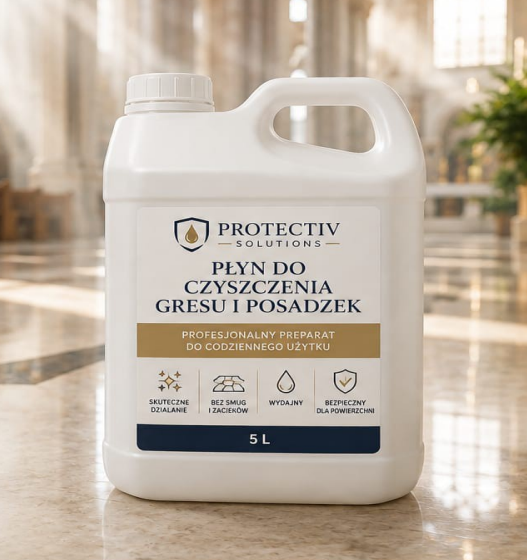
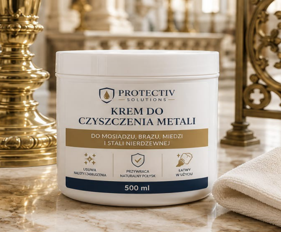
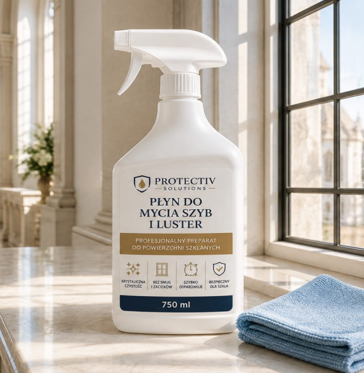
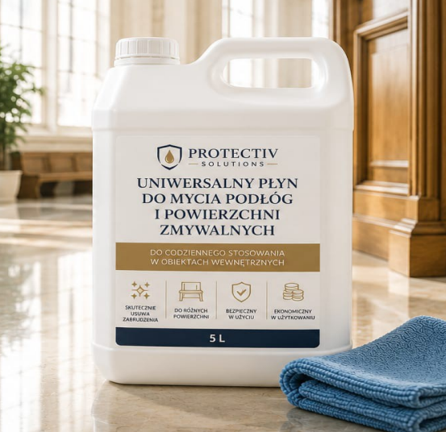
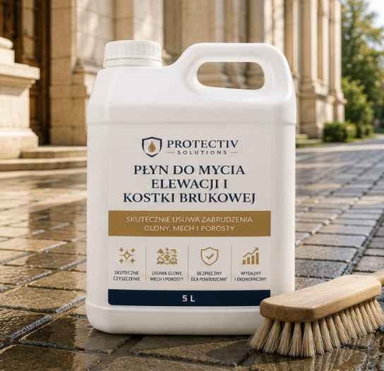
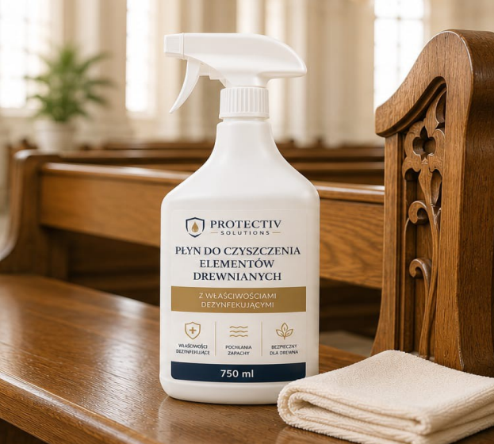

Next-generation professional automotive chemistry
Four complementary products forming a complete vehicle-care system — developed on chemical know-how, years of experience and attention to every detail of the production process. They clean more effectively, protect longer, and act responsibly toward the environment.

Power Blue Rust Remover
Next-generation biodegradable cream rust remover
Removes corrosion, oxide deposits and grime from metal surfaces. The creamy consistency doesn't run off the surface, extending dwell time and effectiveness — on rims, brake calipers or body panels.
- Biodegradable formula
- Leaves a protective zinc phosphate layer
- No heavy scrubbing required

Active Foam Premium
Professional-grade active foam
Highly pure ingredients effectively remove road grime, mud and greasy deposits — while staying safe for paint, plastics and chrome trim.
- Rich, stable foam with no color streaking
- Leaves a hydrophobic layer
- Reduces re-deposit of dirt

K2 Multi Degreaser
Multi-purpose automotive degreaser
A universal preparation for effectively removing grease, oils and lubricants — in the engine bay, on mechanical parts, in the cockpit or on fabric upholstery.
- Penetrates dirt quickly
- Leaves no greasy film
- One product instead of several specialist ones

Air Fresh Pro
Professional vent and A/C system freshener
Refreshes vents, air ducts and air-conditioning systems, effectively neutralizing unpleasant odors and leaving a long-lasting fresh effect inside the vehicle.
- Works directly inside the vent system
- Neutralizes rather than masks odors
- Safe for plastics and rubber
Luxury Care Collection
Products created for people who expect a flawless look, high performance, elegant design and premium quality. Luxury Cleaning Technology in a limited, collector's edition.

Premium Metal Care
Luxury Metal Protection
A professional preparation for cleaning and protecting premium metal surfaces — stainless steel, aluminum, chrome, luxury interior trim.

Active Foam
Luxury Wash Experience
A luxury active foam for car detailing — thick foam, safe for paintwork, detailing-quality finish.

Yacht Cleaner Cream
Luxury Marine Care
An exclusive cream for yacht and premium surface care — deep shine, marine finish, protection against dirt buildup.

Copper Conductivity Cream
Premium Copper Technology
An advanced cream for copper and conductive surfaces — reduces oxidation, improves conductivity, lowers transmission resistance.

Stainless & Rust Cleaner
Premium Steel Restoration
A premium preparation for stainless steel and rust removal — removes deposits, restores shine, protects against corrosion.
CreamLUX
Cream cleaning preparations for household, workshop and industrial use — from metal care to paving stone and façade cleaning.

Power Black
Black cleaning cream for dark surfaces — black glazed tile, terracotta.

Power Blue
Cream for cleaning bathrooms: shower, tub, faucets, sinks — ceramic and metal.

Power White
Universal cream for ceramic, steel and chrome surfaces — with polishing additives.

Rust Remover
A preparation for cleaning metal surfaces — removes rust deposits, protects against corrosion.

Pol Moc
An all-purpose cleaning cream for metal and ceramic household surfaces.

Power Bruk
A preparation for cleaning paving stones, pavement slabs and curbs — also removes moss from façades.

Power Clean
A general-purpose cleaning and degreasing preparation — workshops, catering, municipal facilities. PZH certified.

Copper Alu
A preparation for cleaning copper and aluminum — copper contacts in transformers, aluminum connectors.
A hydrophobic preparation for maintaining paving stones and façades — protects against moisture and organic growth.
Cleans yacht hulls and stainless-steel elements — polishing and care for premium surfaces.
A surface disinfectant for machines, equipment and production surfaces — bactericidal, yeasticidal and fungicidal action.
A preparation for removing oil stains from paving stones.
AZ
Concentrated specialist preparations for tasks ordinary products can't handle — glue, graffiti and label removal.

AZ Plix
A universal degreaser for kitchen, bathroom, office and workshop — effectively removes grease, dirt and deposits.

GraffiClean Gel
A professional gel for removing graffiti from concrete, brick, glass and metal. 1 L.

Pelix
A product for removing adhesive from labels, stickers and tapes — on glass, metal, ceramic and plastic. 1 L.
Protectiv Solutions — the full range
Specialist preparations for the home, bathroom, workshop and building surroundings.

Wheel Cleaner
A premium acidic product for rims, stone and concrete — removes flash rust and road deposits.

Bathroom Cleaner
A premium acidic product for grout, showers, faucets and bathroom ceramics.

GlueClean
An adhesive remover — removes stickers and labels from various surfaces. 1 L.

Gres+
A product for tough stains on porcelain tile and ceramic tiles, indoors and outdoors. 5 L.

Plama Stop
A concentrate for removing oil stains — workshop halls, garages, industrial floors. 5 L.

Foam Rust Remover
Removes rust and engine/diesel oil stains from concrete surfaces.

Laundry Liquid / Gel
No fabric softener needed, biocide-free — for white and colored fabrics. 50–70 ml per wash.

Premium Laundry Capsules
A universal formula, 1 capsule per 4–6 kg load, 20–90°C.

Plix Toilet Cleaner
A fresh-scented preparation for cleaning toilets and sinks.

Pliks
A preparation for cleaning household waste bins.

HipoCaps Wash
Hypoallergenic laundry capsules for the whole family — free of dyes and allergens. 20 pcs.
Cleanliness you can feel
No compromises for your health. We create products that combine effectiveness with care for your loved ones. Every ingredient is microbiologically pure, and our formulas stay close to nature. Gentle on skin, effective on dirt.
- For everyday surface cleaning (countertops, tiles, tables)
- With natural scents (lemon, mint, lavender)
- For laminate, porcelain tile, wood and ceramic tiles
- Low-foam, streak-free
- Degreasers for countertops and kitchen appliances
- Preparations for cleaning ovens and range hoods
- Removes limescale, soap scum and deposits
- Toilet gels
- Antistatic, streak-free, fast evaporation
- Hypoallergenic, fragrance-free or scented
- For colored and white fabrics
Shine and protection. For your car and the planet
Professional vehicle care built on the synergy of ingredients. Surface protection, deep cleaning, easy application. Safe for paintwork, interior and the environment.
- For washing the body — neutral and strong versions, with high effectiveness and good adhesion
- Safe for wax and paint
- With a gloss-enhancing effect
- Colored wheel foam
- For tire restoration and shine
- For a quick paintwork refresh and removing fingerprints
- Removes insects and road film
- Antistatic products for plastics and the dashboard
- Odor neutralizers
- Professional preparations for yacht cleaning
Performance in the service of cleanliness
Less is more. Concentrated products for professional use. Fewer ingredients — greater effectiveness. Ideal for halls, workshops, plants and technical spaces.
- For machines, tools, workbenches
- For scrubber machines or manual use
- Low-foaming, safe for metal and plastics
- For steel, aluminum, industrial equipment
- For cleaning containers, silos, tanks
- Professional products for ongoing cleanliness maintenance
- For removing weld discoloration
- For cleaning marine engines
Precision solutions for special tasks
Formulas created for specific needs — from adhesive removal to cleaning demanding surfaces. Ideal where standard products fail.
- A preparation for removing vulcanized adhesive layers and protective films from metal or plastic
- For metal, composite, concrete — removing soot, deposits, algae
- Removes moss, efflorescence, oil
- Removes grease and burnt residue, safe for stainless steel
- Cleaning and polishing, contamination neutralization
- Cleaning air-conditioning and ventilation systems
- For cleaning intake and exhaust manifolds, brake calipers
Cleaning products for sacred sites
Professional solutions for churches, chapels and places of worship. A line of preparations for comprehensive cleaning and care of floors, metals, glass, washable surfaces, façades, paving stones and wooden elements — combining high effectiveness with safe use and respect for the durability of the materials being cleaned.

Cleaner for Porcelain Tile and Floors
For everyday cleaning of tile floors, ceramic tiles and stone — corridors, naves, sacristies. Leaves no streaks or residue.

Metal Cleaning Cream
For brass, bronze, copper and stainless steel — candlesticks, chandeliers, railings, handles and decorative church fittings.

Glass and Mirror Cleaner
For windows, mirrors, display cases, glass doors and glazing — crystal-clear cleanliness with no streaks, fast evaporation.

Universal Floor and Washable-Surface Cleaner
For pews, doors, furniture, windowsills and plastic surfaces — leaves a pleasant, fresh scent.

Façade and Paving-Stone Cleaner
Removes weathering grime, algae, moss and lichen from stone and concrete façades, paving stones, walls, terraces and outdoor steps.

Wood Cleaner with Disinfecting Properties
For pews, platforms, confessionals and wood paneling. Cleans, disinfects and absorbs unpleasant odors, while caring for wood's natural look.
Effectiveness confirmed by independent measurement
reduction in busbar joint contact resistance
Electrical resistance measurement of a CreamLUX-treated busbar joint
An independent measurement protocol no. 1/12/2021 showed that cleaning the contact surface of a copper busbar joint with CreamLUX reduces transition resistance by over 31%. The preparation leaves a smooth contact surface and a galvanic zinc film that improves the joint's electrical conductivity.
Download the measurement protocol (PDF)Couldn't find what you're looking for?
We create custom formulas on request — tell us what problem you want to solve.